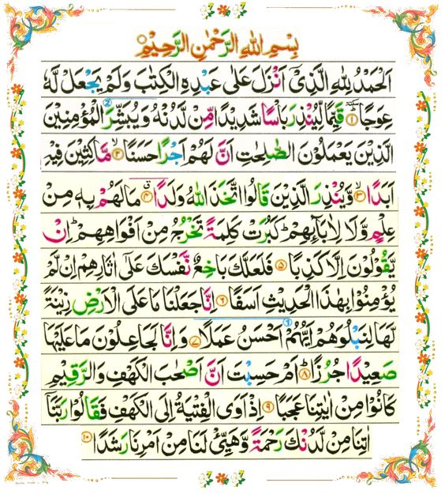

Surah Al-Kahf
First 10 Verses
Video
Audio
Bangla translation
Abū Sa'id reported the Prophet as saying, “If anyone recites sūra al-Kahf (Qur’ān, 18) on Friday, light will shine brightly for him till the next Friday.”
Reference : Mishkat al-Masabih 2175
Surah Al Kahf - 1st 10 verses
